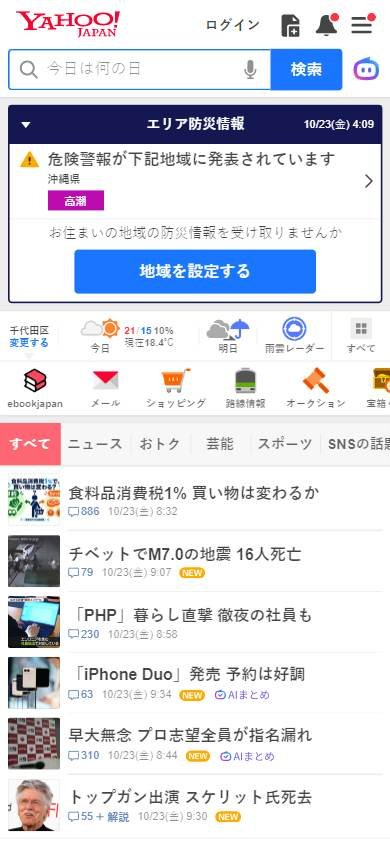
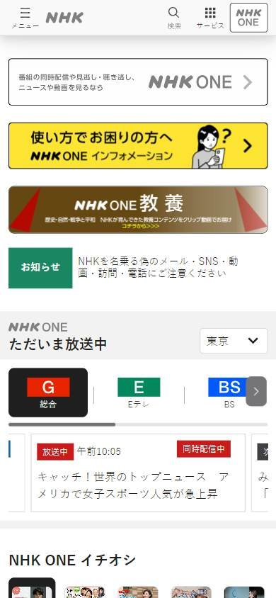
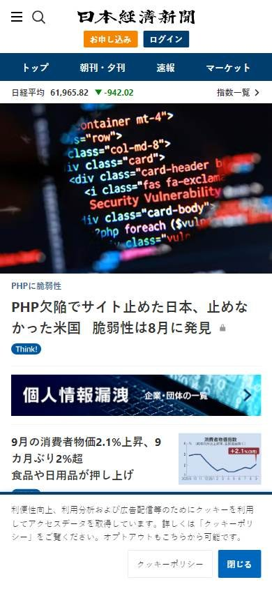

Sitio informativo o de noticias
Los seleccionados
Los tres sitios más visitados de Japón, según estadísticas de tráfico.
En resumen: lo que hacen los líderes
La pantalla de inicio de cada uno



Estilo visual
Colores, imágenes, tipografía y cuánta información muestran.
Tu estilo visual debería…
- Paleta sobria y listas de titulares; las fotos acompañan, no protagonizan.
Lo que tienen en común: Paletas sobrias, fotos chicas y mucho texto: la información manda sobre la imagen.
La paleta de cada uno
Medida sobre la primera pantalla. Los colores de marca salen del header; el resto muestra cuánto espacio ocupa cada color.
Así lo resuelve cada uno
Ficha comparativa
| Aspecto | Yahoo! Japan | NHK | Nikkei |
|---|---|---|---|
| Paleta | Acotada: rojo + blanco | Acotada: negro + blanco + colores de canales | Acotada: azul + naranja + blanco |
| Imágenes | Fotos chicas | Fotos chicas | Fotos medianas |
| Densidad | Muy alta | Alta | Alta |
| Tipografía | Texto chico | Texto chico | Logo tradicional + texto chico |
Header
La franja de arriba con el logo y los accesos.
Tu header debería…
- Header blanco y sobrio; botones chicos y claros para suscribirse e ingresar.
Lo que tienen en común: Logos sobrios y headers blancos; los accesos son íconos o botones chicos con texto.
Así lo resuelve cada uno

Ficha comparativa
| Aspecto | Yahoo! Japan | NHK | Nikkei |
|---|---|---|---|
| Fondo | Blanco | Blanco | Blanco + franja azul de secciones |
| Logo | Centrado, rojo | A la izquierda, chico | Centrado, tradicional en negro |
| Accesos | Íconos de servicios con nombre | Botones con borde | Botones naranja «Suscribirse» y azul «Ingresar» |
Menú y categorías
Cómo se organizan las secciones.
Tu menú y categorías debería…
- Columna de secciones a la izquierda, siempre visible.
Lo que tienen en común: Muchos usan una columna lateral a la izquierda con todas las secciones a la vista.
Así lo resuelve cada uno


Ficha comparativa
| Aspecto | Yahoo! Japan | NHK | Nikkei |
|---|---|---|---|
| Formato | Columna de servicios a la izquierda | Columna de secciones a la izquierda | Franja azul con secciones |
| Densidad | Muy alta | Alta | Media |
Primera pantalla
Lo primero que se ve debajo del header.
Tu primera pantalla debería…
- Titulares de texto en lista, con fotos medianas o chicas.
Lo que tienen en común: La portada se apoya en listas de titulares de texto más que en fotos grandes.
Así lo resuelve cada uno
Ficha comparativa
| Aspecto | Yahoo! Japan | NHK | Nikkei |
|---|---|---|---|
| Formato | Lista de titulares de texto + foto al costado | Programación en vivo + titulares | Titular con foto y texto |
| Foto grande | No | No | Mediana |